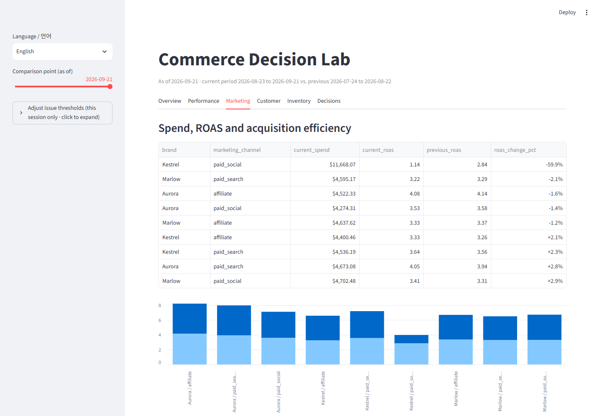
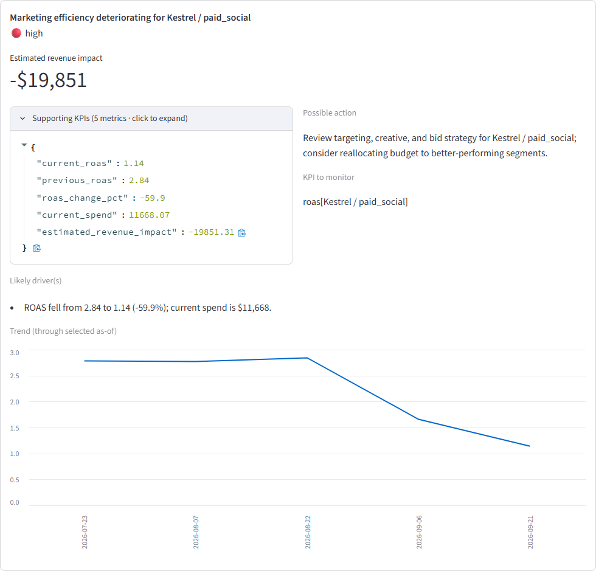
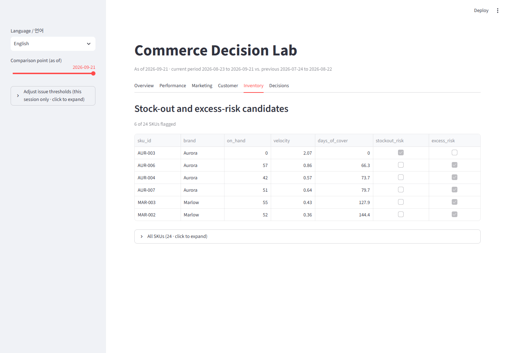
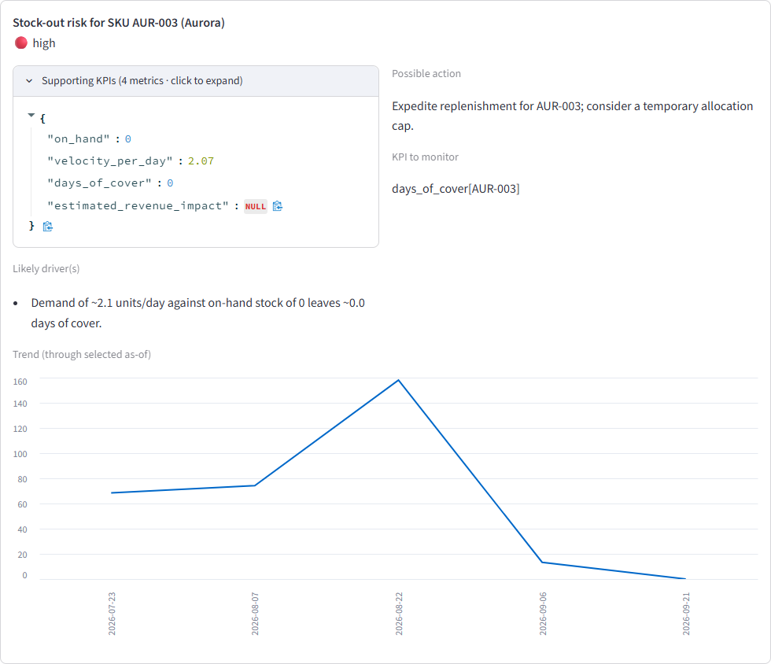
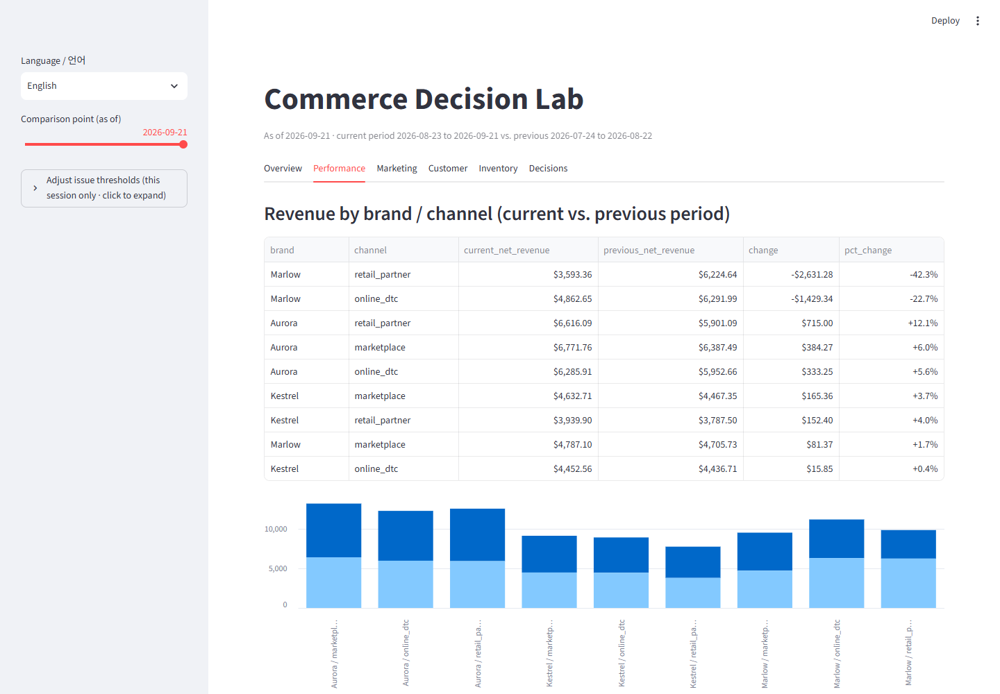
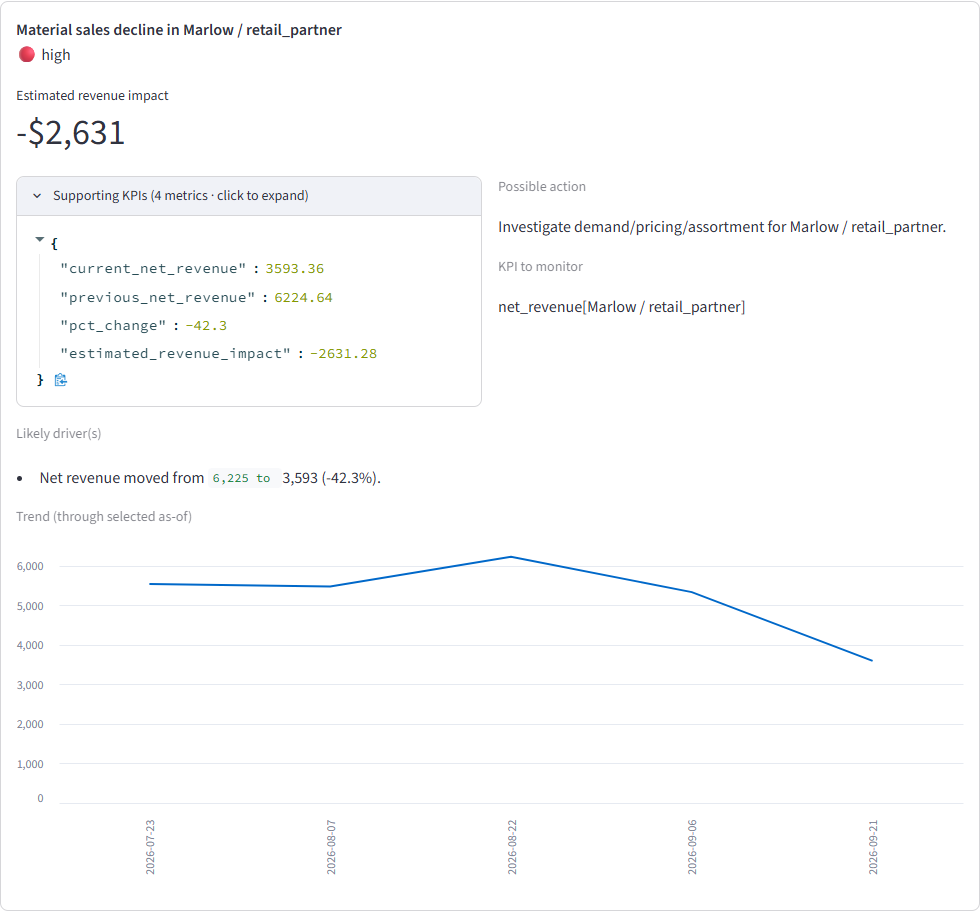
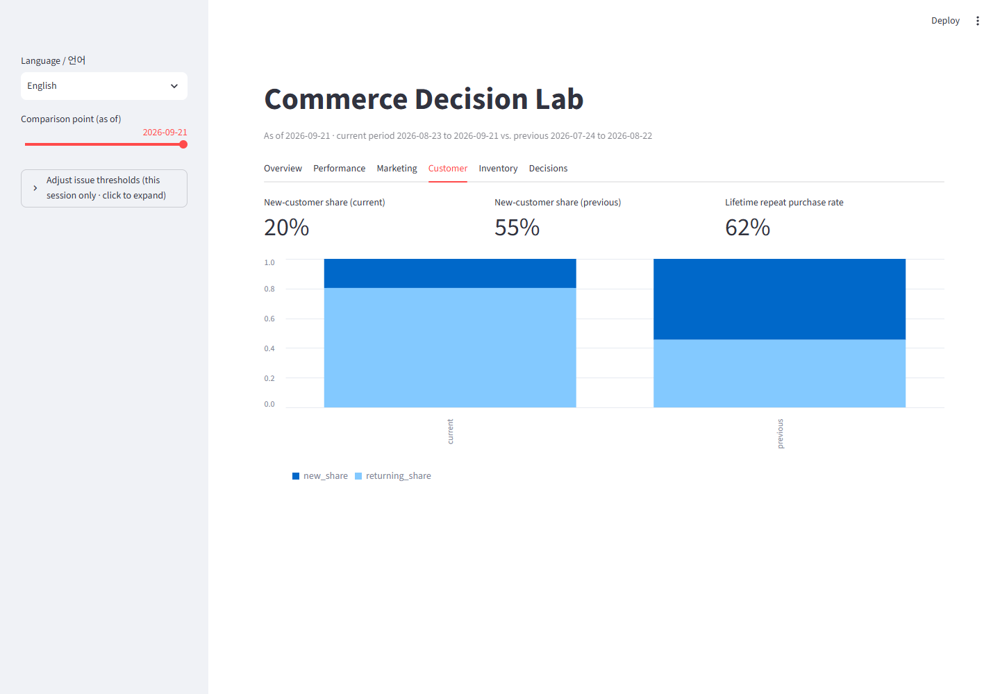
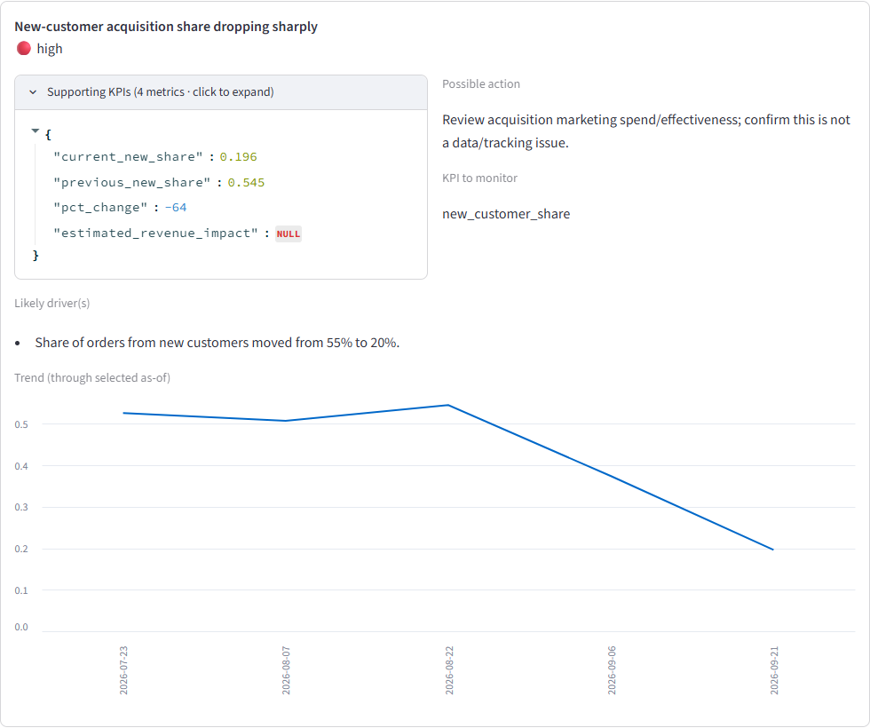

파편화된 합성 커머스 데이터를 경영 판단의 근거로 바꾸는 시스템. 화려한 대시보드가 아니라, 화면에 뜬 숫자 하나하나를 계산한 SQL까지 거슬러 올라갈 수 있는 추적 가능한 의사결정 시스템을 보여줍니다.
주문, 마케팅 지출, 재고, 고객 데이터가 시스템별로 따로 쌓여 있습니다. 이 데모는 실제 회사 데이터 대신, 같은 문제를 재현하도록 설계된 합성 데이터 5종을 씁니다 — 브랜드 3개 × 채널 3개 × SKU 24개 × 고객 900명, 120일 치.
raw → staging → metrics 3단계 BigQuery 레이어를 거치며 비교 가능한 KPI로 바뀌고, 그 위에 결정적 규칙이 이슈를 탐지합니다. 여기까지는 전부 SQL/Python이고 재현 가능하며 테스트로 검증됩니다 — AI는 아직 등장하지 않습니다.
아래 카드 중 하나를 클릭하면, 원본 데이터의 패턴 → 증거 화면 → 시스템이 내린 판단(우선순위·근거·조치)까지, 실제 로컬 실행에서 캡처한 화면으로 끝까지 따라갈 수 있습니다.
Kestrel 브랜드의 paid_social 채널에서, 최근 30일 구간 지출이 이전 구간 대비 약 2.6배로 늘었지만 기여 매출은 거의 그대로입니다. 다른 브랜드/채널 조합은 지출-매출 관계가 안정적으로 유지됩니다.
실제 KPI 테이블에서 Kestrel / paid_social 행만 ROAS가 무너진 게 보입니다.

결정적 규칙이 roas_change_pct ≤ -40% 조건으로 high 심각도를 부여하고, 근거와 조치를 구조화합니다.

roas[Kestrel / paid_social]를 계속 지켜봄.
SKU AUR-003(Aurora)은 최근 구간 수요 비중이 약 2.8배로 커지는 동시에 입고가 거의 0으로 줄었습니다. 다른 SKU들은 실수요를 따라가는 반응형 재입고 정책 덕분에 20~35일 수준의 안정적인 재고 커버리지를 유지합니다.
재고 위험 후보 목록 맨 위, AUR-003만 재고 0에 재고소진일수 0.0으로 표시됩니다.

days_of_cover < 3이면 high로 분류되는 규칙이 발동했습니다.

days_of_cover[AUR-003]를 계속 지켜봄.
Marlow / retail_partner 세그먼트만 최근 구간 주문 비중이 줄어듭니다. 회사 전체 매출은 대체로 평탄해 보이지만, 이 한 세그먼트에서는 실질적인 순매출 하락이 발생합니다 — 전체 지표만 보면 놓치기 쉬운 패턴입니다.
브랜드×채널 테이블에서 Marlow / retail_partner 행만 두드러지게 하락한 게 보입니다.

pct_change ≤ -35% 조건으로 high 심각도가 부여됐습니다.

net_revenue[Marlow / retail_partner]를 계속 지켜봄.
신규 고객이 주문을 낼 확률이 베이스라인 약 55%에서 최근 약 20%로 떨어졌습니다. 전체 주문 수는 크게 안 줄어들어도, 그 구성이 재구매 고객 쪽으로 크게 이동합니다 — 획득 채널이나 캠페인, 또는 트래킹 이슈를 점검해야 할 신호입니다.
신규/재구매 비중 차트가 두 기간 사이에 완전히 뒤집힌 걸 보여줍니다.

new_share_pct_change ≤ -50% 조건으로 high 심각도가 부여됐습니다.

new_customer_share를 계속 지켜봄.
"조치가 효과가 있었나?"는 별도 기능이 아닙니다. 이슈를 탐지한 것과 동일한 결정적 함수가 더 최신 데이터에 대해 다시 실행될 뿐입니다. 재고가 회복되면 규칙이 더 이상 발동하지 않고, 이슈는 목록에서 조용히 사라집니다.
저장소의 자동화 테스트(tests/test_decisions/test_post_action_verification.py)가 실제로 검증하는 시나리오입니다.
detect_inventory_issues() 함수를 두 상태에 각각 실행했을 뿐, 별도의 "검증 로직"은 존재하지 않습니다.모든 컴포넌트는 명확한 이유가 있어서 존재합니다 — 화려함을 위한 게 아닙니다.
데이터 볼륨은 의도적으로 작고(주문 ~1,600건), Cloud Run은 유휴 시 스케일 투 제로라 실행 비용은 사실상 무료 티어 수준입니다. 임계값과 규칙은 심어놓은 시나리오를 탐지 가능하게 한 데모용 기본값이며 실제 리테일 벤치마크 튜닝은 아닙니다 — 자세한 내용은 저장소 README의 "한계" 섹션 참고.
이 데모는 합성 데이터로 만든 메커니즘 증명입니다. 같은 구조 — 결정적 메트릭, 근거 있는 이슈 탐지, 제한된 역할의 AI 해석 — 를 실제 데이터 소스에 연결하는 건 이미 검증된 패턴을 재사용하는 문제입니다.